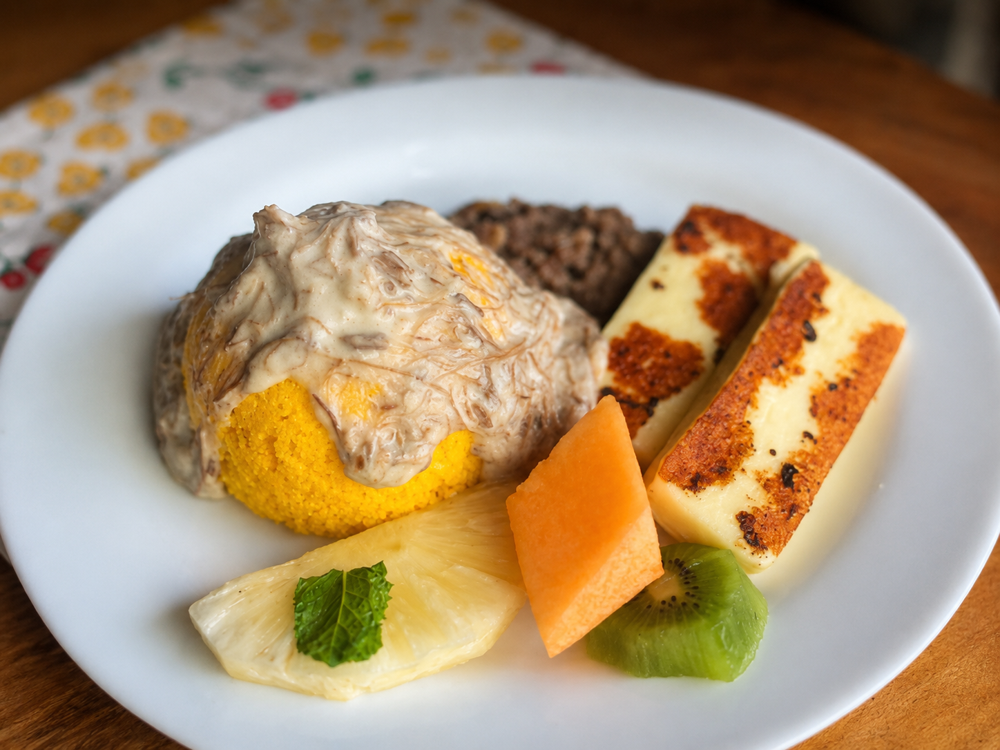

O Raízes do Nordeste nasceu da paixão pelos sabores e tradições do café da manhã nordestino. Inspirado nas receitas passadas de geração em geração, nosso objetivo é valorizar ingredientes regionais e proporcionar momentos de acolhimento, sabor e cultura. Cada prato do nosso cardápio representa um pouco da história, da simplicidade e da riqueza gastronômica do Nordeste brasileiro.